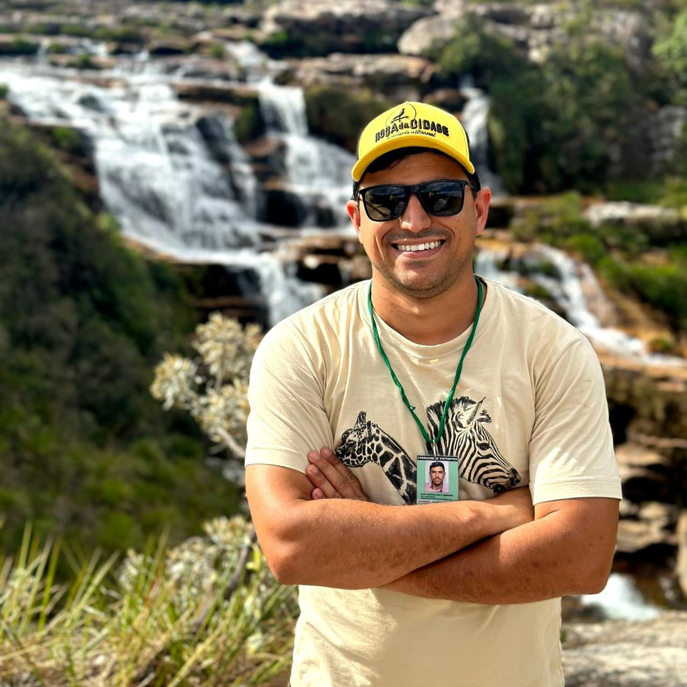

Caminho do Céu
Trilha que leva a um dos mirantes mais deslumbrantes da região, com vista sobre os campos e as serras da Canastra.
Roteiros de ecoturismo responsável, trilhas, cachoeiras e mirantes saindo de Vargem Bonita, com vivências autênticas na natureza mineira.
Falar pelo WhatsApp →
Guia credenciado pelo Parque Nacional da Serra da Canastra (Cadastur nº 39259562000190 / SEI 10966906), o Alef atua há anos oferecendo experiências completas e seguras pela região.
Baseado em Vargem Bonita (MG) — porta de entrada da Canastra — ele conduz roteiros que exploram as principais cachoeiras, trilhas e mirantes, sempre com foco em ecoturismo responsável.
Participa também do projeto “Passaporte do Queijo”, conectando o visitante à cultura e à gastronomia local.
Sem preços aqui — selecione a data e fale direto com o Alef pelo WhatsApp.
Trilha que leva a um dos mirantes mais deslumbrantes da região, com vista sobre os campos e as serras da Canastra.

Passeio pelo icônico Cachoeira do Fundão, com trilhas entre formações rochosas e piscinas naturais de água cristalina.

Subida à parte alta do Casca Danta, com panorâmicas incríveis e o ponto mais alto da Serra da Canastra.

Um vale de beleza singular, entre cachoeiras e formações que fazem da região um convite ao ecoturismo.
Credenciado pelo Parque Nacional da Serra da Canastra e Cadastur, com foco em segurança e responsabilidade ambiental.
Passeios de um dia, roteiros de 4 a 7 dias e experiências montadas conforme o perfil de cada visitante.
Participa do projeto “Passaporte do Queijo”, conectando você à gastronomia e à tradição de Minas Gerais.
Entre em contato, monte o roteiro e aproveite a Canastra.
Conte quais lugares você quer conhecer e quantas pessoas vão viajar.
O Alef define as datas, trilhas e cachoeiras que fazem sentido para o seu grupo.
Basta seguir o guia e curtir as trilhas, cachoeiras e mirantes da região.
“Se existisse uma nota maior que 10, seria para o Alef. A Serra da Canastra por si só já é espetacular, mas conhecer esse lugar com ele torna a experiência ainda mais incrível! Além de ser um guia excepcional, que conhece cada cantinho e faz questão de proporcionar a melhor experiência possível, o Alef entrega muito mais do que se espera de um passeio. Tem drone para fazer os melhores vídeos, Starlink para garantir internet até nos lugares mais remotos e ainda assume o papel de fotógrafo e diretor de poses! Manda posar, escolhe o ângulo, faz refaz e só sossega quando a foto fica perfeita! Não é simplesmente levar turistas para conhecer a Canastra, é fazer questão de que cada um saia de lá com memórias inesquecíveis. Recomendo de olhos fechados!”
“Sensacional. Horário, atenção, cuidado, veículo. Recomendo de olhos fechados. Ficamos muito grato, obrigado.”
“O melhor e mais preparado guia da Serra! Ele conhece cada detalhe da região, além de ser uma pessoa excelente e extremamente alegre, gentil, prestativa e disponível, fazendo você se sentir seguro e muito bem cuidado durante todo o passeio. Outro diferencial: ele é o único com Starlink no carro e também nas trilhas, oferecendo muito mais segurança e tranquilidade. SUPER RECOMENDO!”
Entre em contato pelo WhatsApp e reserve seu roteiro de ecoturismo com o Guia Alef.
Falar pelo WhatsApp →